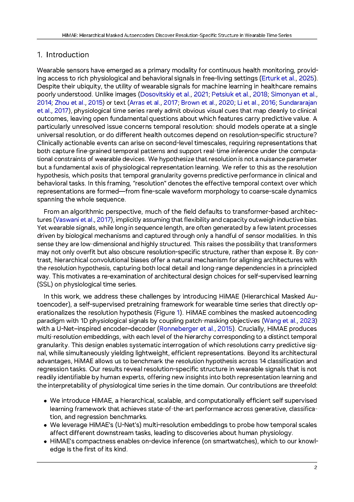
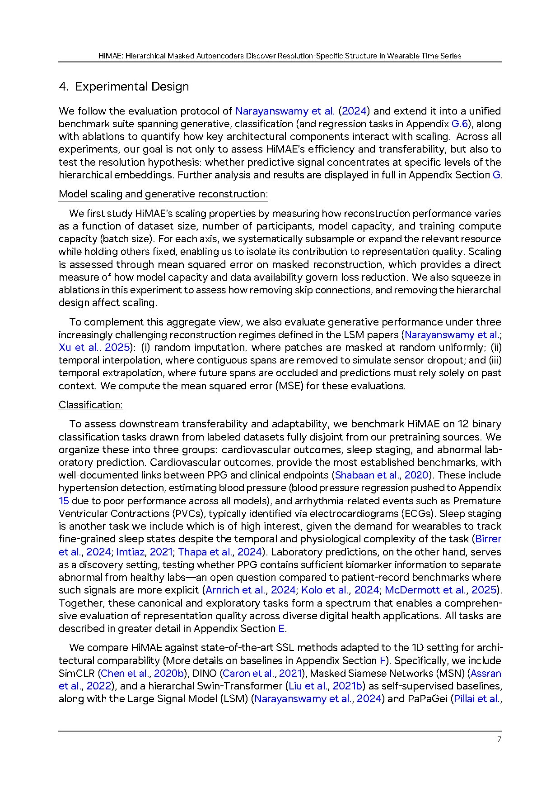

assets/himae_fig.jpg to populate this slot.HiMAE is a lightweight self-supervised objective built around hierarchical masked autoencoders. The model is trained to reconstruct masked patches of wearable time series at multiple temporal resolutions, and the resulting hierarchy of representations preserves resolution-specific structure that downstream tasks can selectively read off.
The trained model competes with much larger transformer foundation models on a wide range of wearable downstream tasks despite its much smaller compute and parameter footprint. Just as importantly, the hierarchical structure doubles as an interpretability tool: by inspecting which level of the hierarchy a given downstream task most relies on, the model reveals the temporal resolution at which the task lives.
Wearable signals on real devices need representations that are small enough to deploy and transparent enough to debug. HiMAE shows that careful hierarchical design can deliver both, and that resolution-specific interpretability falls out naturally from the architecture.

@inproceedings{lee2026himae,
title = {HiMAE: Hierarchical Masked Autoencoders Discover Resolution-Specific Structure in Wearable Time Series},
author = {Lee, Sang-Ah and Tanade, Cyrus and Zhou, Hao and Lee, Juhyeon and Thukral, Megha and Han, Minji and Choi, Rebecca and Khan, Md Sazzad Hossain and others},
booktitle= {International Conference on Learning Representations (ICLR)},
year = {2026}
}